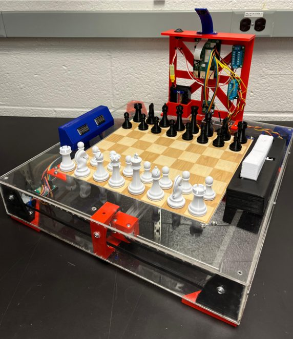
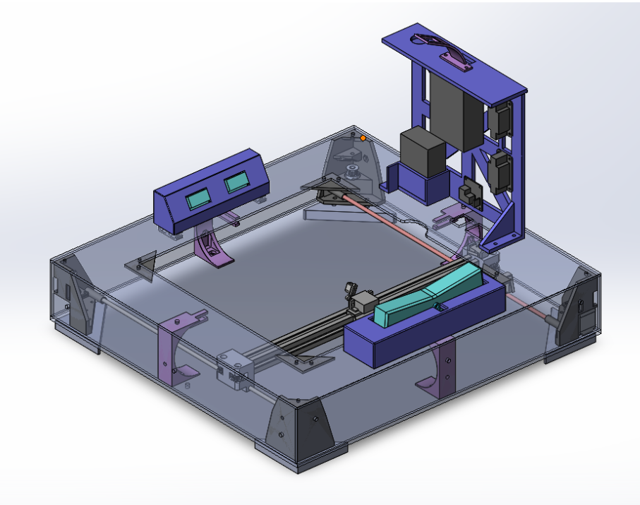
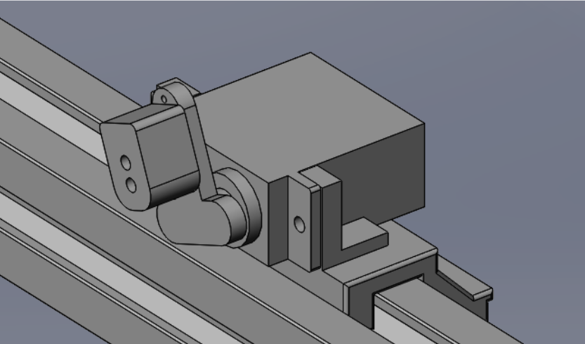
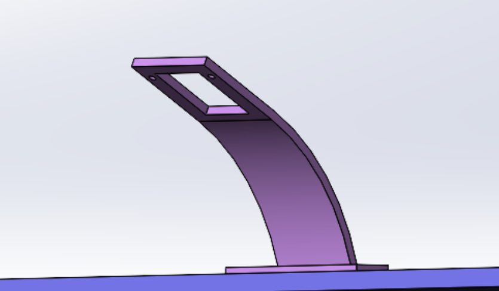

Personal project · In progress
Autonomous Chess Board
- Raspberry Pi
- SolidWorks
- Computer vision
- 3D printing
- Laser cutting
- Laser engraving

Overview
A chess board that plays back against you. I designed and fabricated it using a Raspberry Pi, motors, and computer vision: a player plays a full game against the computer, and the board makes its own moves in response, with a magnet on a gantry beneath the playing surface dragging the pieces.
Mechanism
The pieces have print-in-place magnets embedded in them, and a magnet mounted beneath the board drags them across the playing surface. That underside magnet rides on an H-bot gantry for fast, accurate positioning, and I designed the servo-actuated magnet gantry in SolidWorks.
Every piece was dimensioned to tight tolerances so the mechanism runs smoothly beneath the playing surface.



Fabrication
I fabricated the parts using 3D printing, laser cutting, and laser engraving.
Software and next steps
The board runs on ChessOS. Its computer vision can currently detect the pieces and sort them by color, but not yet consistently.
Next, rather than trying to recognize each piece by type (telling a knight from a king), the system will track every piece as it moves throughout the game.